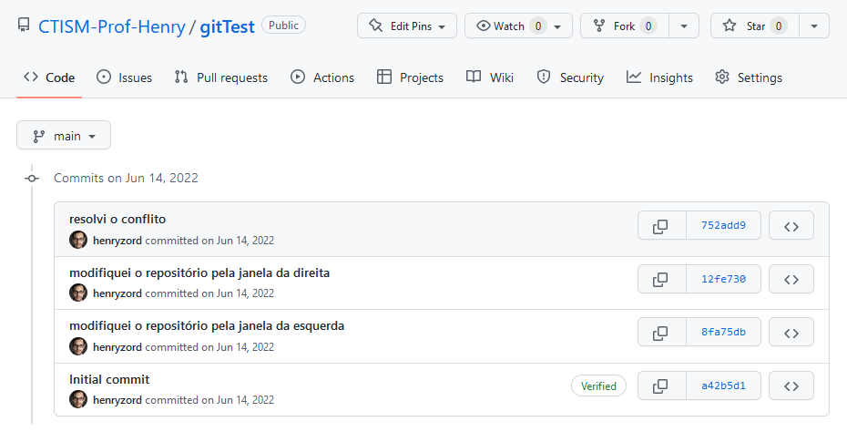

Finalizando¶

A mensagem Automatic merge failed; fix conflicts and then commit the result quer dizer que você terá que abrir os arquivos que resultaram em conflitos e deixá-los da maneira que eles devem ficar corretamente. Você saberá quais arquivos estão dando conflito pela mensagem do git; na imagem acima, o conflito está no arquivo README.md.
Abrindo o arquivo README.md pelo Sublime Text, vemos que ele está da seguinte maneira:

O arquivo está organizado da seguinte maneira: os caracteres <<<<
marcam o começo da região que resultou em um conflito; os caracteres
>>>> marcam o fim da região conflitante. Os caracteres ====
marcam a divisão do código; onde diz HEAD, é o código da sua máquina
local, e o código (neste exemplo) marcado pela hash
8fa75db4cccadfec3d45a5e8a8ee10c9c6fb1697 é o código que veio do
repositório do Github (na verdade, esta hash é o ID do commit no
Github).
Arrume o arquivo de maneira que ele concilie as modificações que você fez, e as que seu colega fez (e já estão no Github):

Após a correção, volte para a linha de comando e envie as modificações para o Github:

Pronto! Com isso, tanto seu código, quando o do seu colega, estarão no Github:
